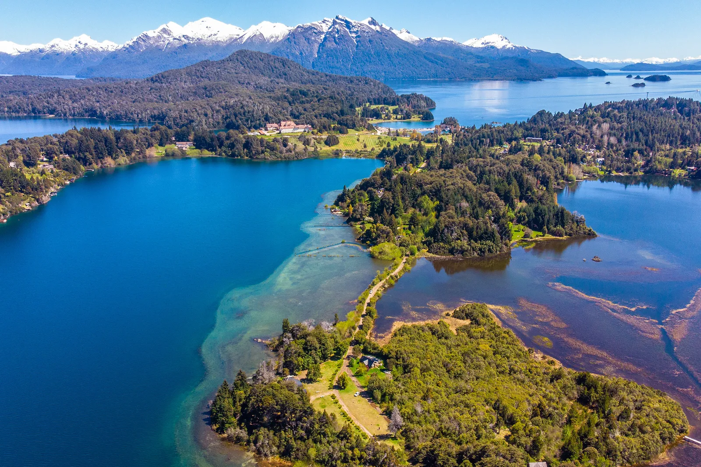

Bariloche: Un viaje a través de la magia y la aventura


¿Buscas un escape perfecto de la rutina? Bariloche te invita a vivir un viaje mágico en el corazón de la Patagonia Argentina. Paisajes de ensueño: Déjate sorprender por los lagos cristalinos, las montañas nevadas y los bosques frondosos que rodean a Bariloche. Contempla el atardecer en el Lago Nahuel Huapi, una experiencia que te dejará sin aliento.